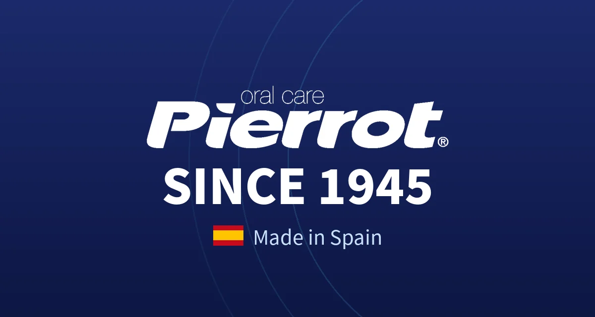
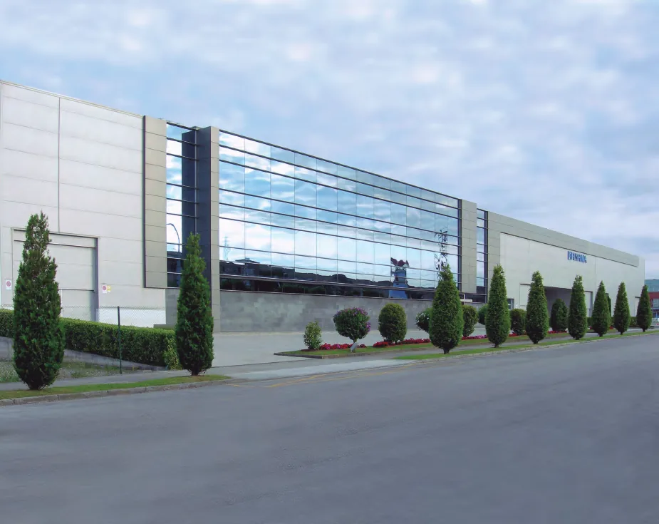
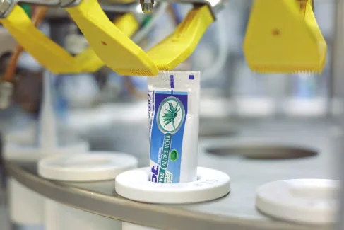
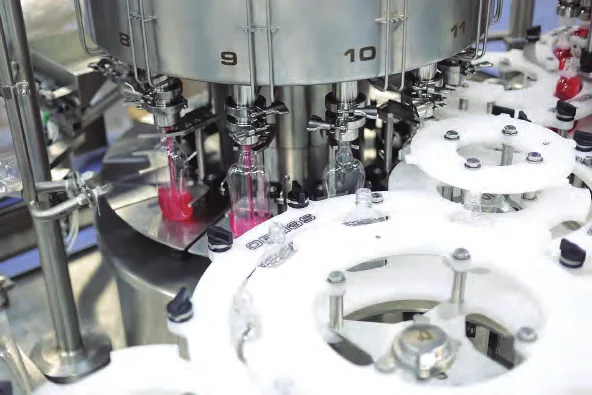
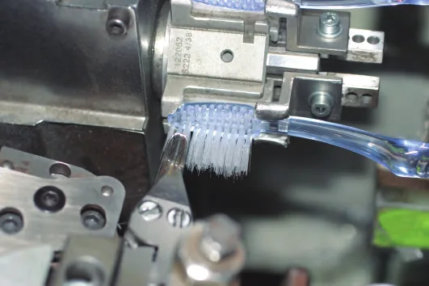
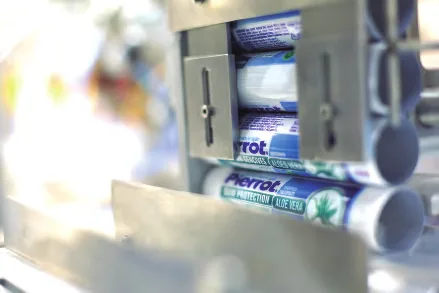
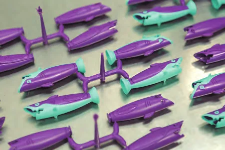
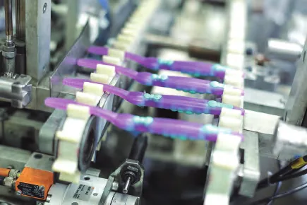

1945
一切由此開始
Pierrot 品牌喺西班牙誕生，以品質、創新同貼心服務守護口腔健康。






品牌故事 · Since 1945
由牙刷到牙膏、漱口水，Pierrot 全部喺西班牙自家廠房生產。八十年來專注口腔護理，產品銷售超過 60 個國家。
里程碑
由 1945 年創立，到成為西班牙以外都備受認可嘅口腔護理品牌，Pierrot 每一步都堅持品質、創新同責任。
一路走嚟，我哋獲得國際認證、商業獎項，亦參與國際牙科展覽。呢啲里程碑唔係終點，而係推動我哋繼續進步嘅起點。
1945
Pierrot 品牌喺西班牙誕生，以品質、創新同貼心服務守護口腔健康。

1989
Pierrot 開始拓展海外市場，將口腔護理帶到唔同國家同文化。
2006
啟用現代化高效廠房，持續提升設施、設備同產品質素。
2007
獲頒 Premio Cotidiano 獎項，表揚兼具功能、設計同創新，改善日常生活嘅產品。
2012
推出專利設計嘅 Sharky 兒童牙刷，令刷牙變得有趣又有效。

2016
自設實驗室，提升產能，更能掌握配方研發。
2022
可生物降解牙刷，可堆肥、純素、不含 BPA，並獲 FSC 認證。
2025
八十年歷史，見證 Pierrot 喺口腔護理嘅專業，同埋對「西班牙製造」嘅堅持。

保證與認可
原廠製造
由西班牙原廠製造流程，了解 Pierrot 點樣堅持 80 年嘅品質承諾。